Elapsed 00:00
- Eigenvectors corresponding to the two different eigenvalues of M areorthogonal.
- The matrix M is not diagonalizable.
- The eigenvalues of M are 4 and 1
- The rank of M is 1.
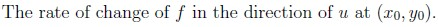
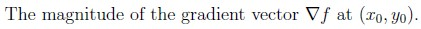
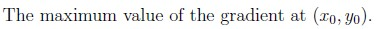
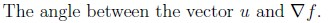
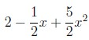
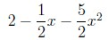
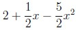
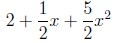
Q5MSQ3 marksselect all that applyWhich of the following options is/are true?
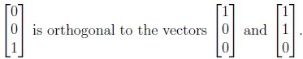
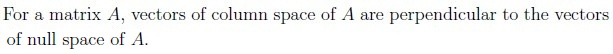
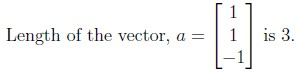
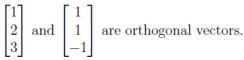
Q6MSQ3 marksselect all that apply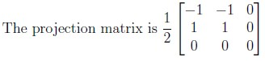
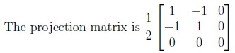
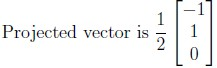
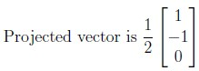
Q7MSQ3 marksselect all that applyWhich of the following statements is/are correct?
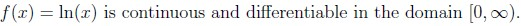
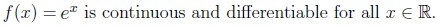
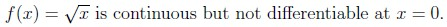
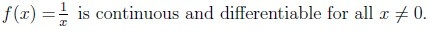
Q8MSQ2 marksselect all that apply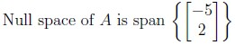
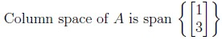
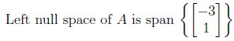
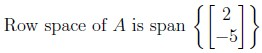
Comprehension passage - the questions below it refer to this
Based on the above data, answer the given subquestions.
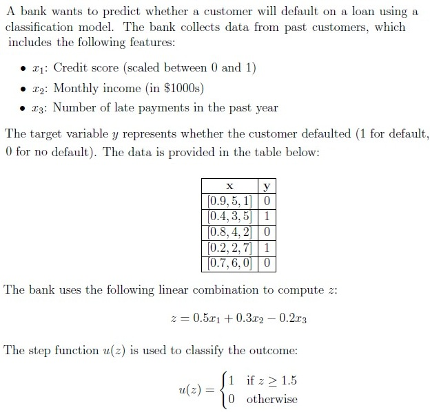
For the input x = [0.9, 5, 1], what will be the predicted output u(z)?
- 0
- 1
- 1.75
- Cannot be determined
If the threshold in the step function is changed to z ≥ 1.0, what will happen to the misclassification rate?
- Increase
- Decrease
- Remain same
- Cannot be determined
Comprehension passage - the questions below it refer to this
Based on the above data, answer the given subquestions.
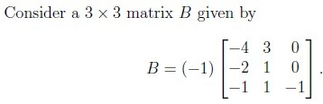
If B is diagonalizable, what is the invertible matrix P such that B = PDP−1?
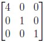
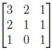
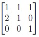
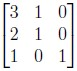
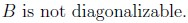
If B is diagonalizable, which of the following is a diagonal matrix D such that B = PDP−1? Use the matrix P obtained in the previous question.
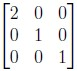
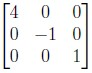
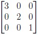
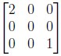
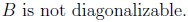
Answer key
- Q1 (MCQ, 3 marks): C
- Q2 (MCQ, 3 marks): D
- Q3 (MCQ, 3 marks): A
- Q4 (MCQ, 3 marks): B
- Q5 (MSQ, 3 marks): A, D
- Q6 (MSQ, 3 marks): B, C
- Q7 (MSQ, 3 marks): B, C, D
- Q8 (MSQ, 2 marks): A, B, C
- Q9 (SA, 2 marks): 15
- Q10 (SA, 3 marks): 6.37 to 6.43
- Q11 (MCQ, 3 marks): B
- Q12 (MCQ, 3 marks): A
- Q13 (MCQ, 3 marks): D
- Q14 (MCQ, 3 marks): A
Concepts this paper tests
Auto-generated summary from the source site. Handy as a checklist; the lessons above explain each idea from scratch.
Summary of Core Topics, Concepts, Principles, and Equations
1. Linear Approximation
- Concept: Linear approximation of a function around a point.
- Equation: For a function f(x,y), the linear approximation L(x,y) around a point (a,b) is given by:
L(x,y)=f(a,b)+fx(a,b)(x−a)+fy(a,b)(y−b)
2. Matrix Properties
- Concepts: Eigenvalues, eigenvectors, diagonalizability, rank, nullity.
Equations:
- Rank-Nullity Theorem: rank(A)+nullity(A)=n for an m×n matrix A.
- Eigenvalue equation: Av=λv.
3. Directional Derivative
- Concept: Rate of change of a function in the direction of a unit vector.
- Equation: The directional derivative of f at (x0,y0) in the direction of u is:
Duf(x0,y0)=∇f(x0,y0)⋅u
4. Least Squares Method
- Concept: Fitting a polynomial to a dataset using the least sum of squares.
- Equation: For a second-order polynomial θ0+θ1x+θ2x2, the least squares method minimizes:
θ0,θ1,θ2mini=1∑n(yi−(θ0+θ1xi+θ2xi2))2
5. Vector Projection
- Concept: Projection of one vector onto another.
- Equation: The projection of a onto b is:
projba=(b⋅ba⋅b)b
6. Continuity and Differentiability
- Concepts: Continuity and differentiability of functions.
- Examples: f(x)=ln(x), f(x)=ex, f(x)=x, f(x)=x1.
7. Gradient and Length
- Concept: Gradient of a function and its length.
- Equation: The gradient of f(x,y,z) is:
∇f=(∂x∂f,∂y∂f,∂z∂f)
The length of the gradient is:
∥∇f∥=(∂x∂f)2+(∂y∂f)2+(∂z∂f)2
8. Classification Model
- Concept: Using a linear combination and step function for classification.
- Equation: Linear combination z=w1x1+w2x2+w3x3, and step function:
u(z)={10if z≥thresholdotherwise
9. Diagonalization
- Concept: Diagonalization of a matrix.
- Equation: B=PDP−1, where D is a diagonal matrix and P is the matrix of eigenvectors.